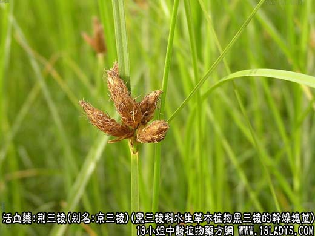
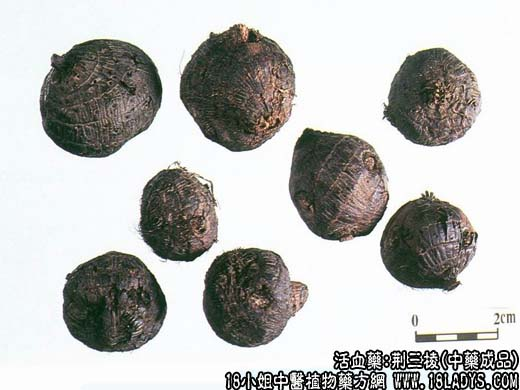
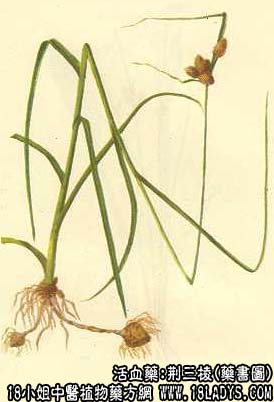
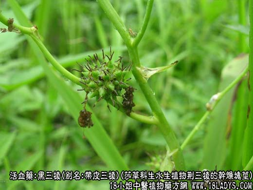
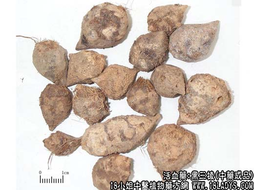
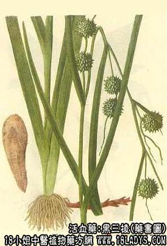

三棱为常用中药。始载《开宝本草》。苏颂：“三棱叶有三棱也，生荆楚地，故名荆三棱，以著其他。”商品分荆三棱和黑三棱两类。
1、荆三棱
别名：京三棱。
来源：为黑三棱科多年水生草本植物黑三棱、小黑三棱及细叶黑三棱的干燥块茎。多为野生。
产地：主产于黑龙江、吉林、内蒙古、湖北、安徽、甘肃等地。
形状鉴别：块茎均已削去外皮，呈圆锥形或卵形圆，略扁，上圆下尖，长3～10厘米，直径2.5～3.5厘米。表面黄白色或灰黄色，有刀削痕，密布小点状须根痕，略呈横向环状排列，两侧面又突起，凹凸不平，外皮未削净处留有黑棕色斑，质坚体重。横切面平坦，黄白色或灰白色，散有不明显的维管束小店。气微，味微美，有麻舌感，
以个大，质坚，色黄白，带粉性，外皮削净者为佳。
2、黑三棱
来源：为莎草科多年生水生植物荆三棱的干燥块茎。均为野生。
产地：主产于黑龙江、吉林、辽宁、河北、甘肃、山东、江苏、湖北等地。
性状鉴别：块茎带皮或削去外皮，呈类球形或短圆锥形，下部微弯曲，长2～5厘米，直径2～2.5厘米，表面黑褐色或黑棕色，多纵沟纹，上端有圆疤茎痕，中部有3～4个根茎残留，纤维状（维管束），并有多数须根痕的小突起。质坚体轻。横切面平坦，黄白色，有散在的维管束黄色小点。气味淡薄。削去外皮的呈不规则球形，表面黄白色，有刀削痕、根茎痕及残存的外皮。
以个大，均匀，整齐者为佳。
主要成分：含挥发油。
炮制：切片，醋制。
性味：苦，平。
归经：入肝、脾经。
功能：破血行气，消积止痈。
主治：腹部肿块，胸腹胀痈，闭经，产后瘀阻腹痛。
临床应用：基本上与莪术相同，两者常配伍同用。其区别是：活血之力三棱优于莪术，理气之功莪术胜于三棱，故祛瘀消积用三棱，行气止痛用莪术。两者配合同用，能加强破血行气作用，治癓瘕积聚、月经不调（闭经、痛经），方如莪棱痛经汤。
又据最近报道，用三棱莪术注射液，合并内服中药（以三棱莪术为首、二味药）治疗原发性肝癌，有一定近期疗效。
用法与注意事项与莪术同。
用量：3～9g。
处方举例：莪棱通经汤：三棱3g，莪术3g，肉桂3g（冲），木香4.5g（后下），熟地9g，白芍9g，当归9g，延胡索9g，川芎9g，桃仁9g，红花6g，水5碗，去渣，分二次温服。
注：1、商品荆三棱和黑三棱，两类药材名称与其原植物相反。
2、云南大理州的剑川、洱源县另产一种“理三棱”。块茎形较扁而长，似鲫鱼状，长3～13厘米，宽2～3厘米。外皮已去，两侧突起呈梯排列，凹陷处残留有黑棕色外皮，形如鱼鳍，其余形状同荆三棱。
3、习惯认为荆三棱质量优于黑三棱。天津两者都用，北京习用黑三棱科的荆三棱。
4、畏牙硝（芒硝）。